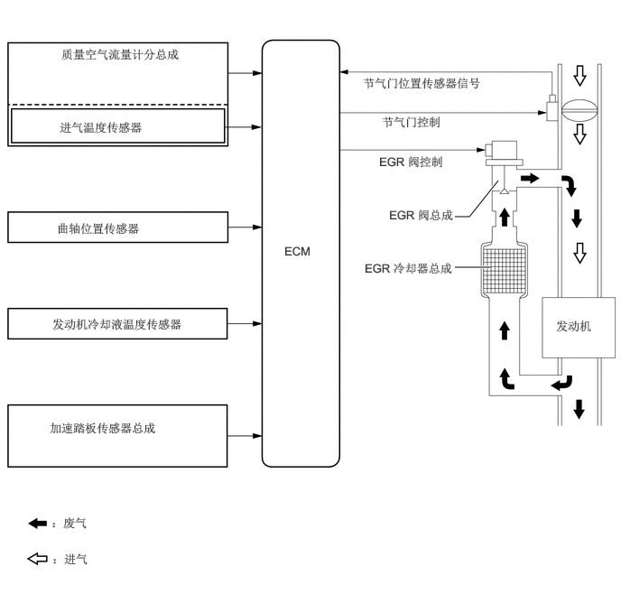

主要零部件的功能
| 零部件 | 功能 | |
|---|---|---|
| 质量空气流量计分总成 | 测量空气流质量并将信号发送至 ECM 以进行 EGR 控制。 | |
| 曲轴位置传感器 | 检测发动机转速并执行气缸识别。 | |
| 带电动机的节气门体总成 | 节气门位置传感器 | 检测节气门开度。 |
| 节气门控制电动机 | 根据 ECM 发出的信号调节节气门开度。 | |
| 发动机冷却液温度传感器 | 检测发动机冷却液温度。 | |
| EGR 阀总成 | 根据来自 ECM 的信号打开和关闭，并控制 EGR 旁通管内废气的流率。 | |
| EGR 冷却器总成 | EGR 冷却器冷却废气以提高 EGR 效率。 | |
| 加速踏板传感器总成 | 向 ECM 发送加速踏板位置传感器等信号。 | |
| ECM | 基于接收自传感器的信号，ECM 根据发动机工作状态确定 EGR 量。 | |
系统控制
对于 EGR 系统，根据发动机状态调节 EGR 气体量，其可流入进气通道，从而降低发动机燃烧室的峰值温度，并可实现低油耗。
通过感应发动机行驶状态及 EGR 阀总成的实际开度，ECM 操作 EGR 阀总成和节气门控制电动机，以调节再循环的废气量。
